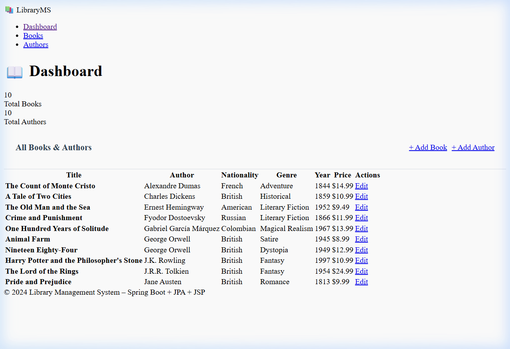
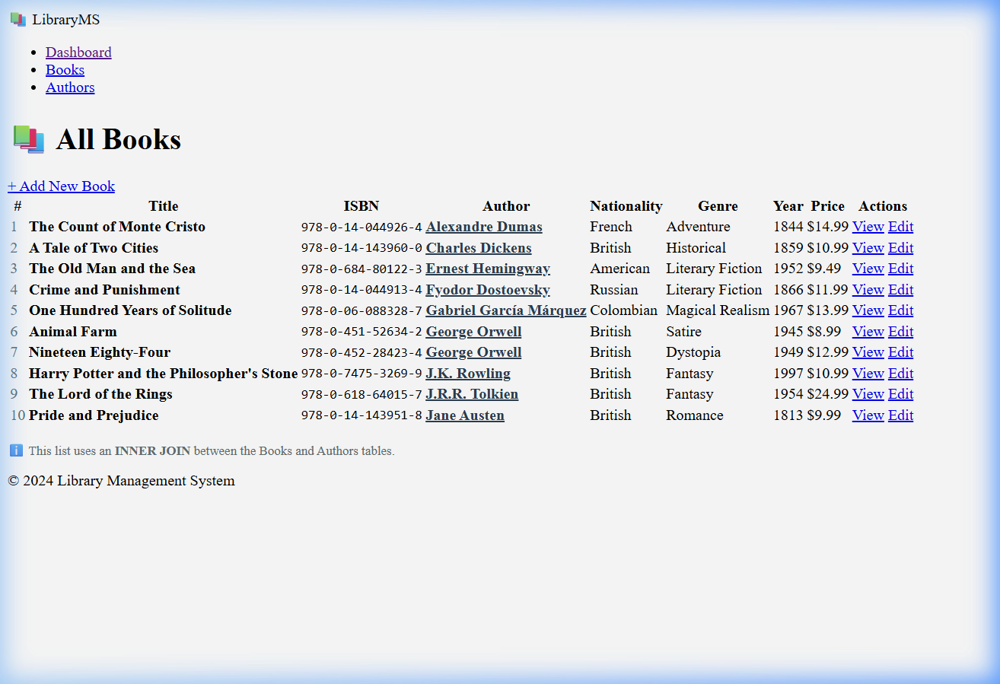
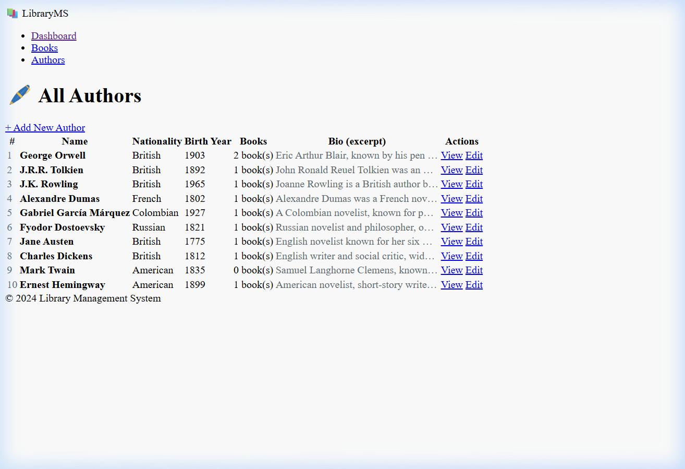
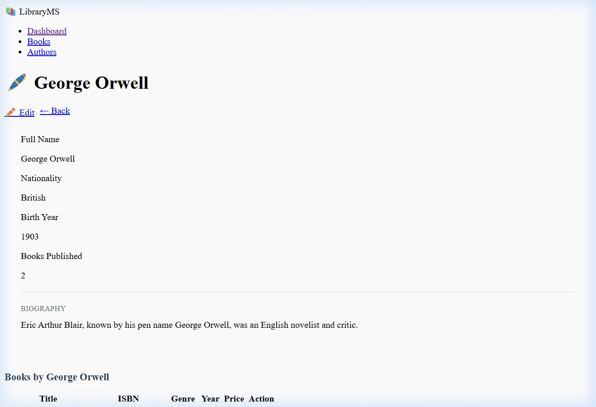

Technology Stack: Spring Boot 3.2 • Spring Data JPA • H2 Database • JSP + JSTL • Maven • JUnit 5 + Mockito
The application manages two primary entities: Author and Book, connected through a One-to-Many relationship — one Author can write multiple Books, but each Book belongs to exactly one Author.
┌──────────────────────┐ ┌──────────────────────────┐
│ AUTHORS │ │ BOOKS │
├──────────────────────┤ ├──────────────────────────┤
│ id (PK) BIGINT │◄───┐ │ id (PK) BIGINT │
│ name VARCHAR │ │ │ title VARCHAR │
│ nationality VARCHAR │ │ │ isbn (UNIQUE) VARCHAR │
│ birth_year INTEGER │ └────│ author_id (FK) BIGINT │
│ bio VARCHAR │ │ published_year INTEGER │
└──────────────────────┘ │ genre VARCHAR │
│ price DOUBLE │
One Author ───────► └──────────────────────────┘
Many Books
id (PK), name, nationality, birthYear, bio@OneToMany(mappedBy = "author", cascade = CascadeType.ALL)id (PK), title, isbn (Unique), publishedYear, genre, price@ManyToOne with @JoinColumn(name = "author_id")| Annotation | Purpose |
|---|---|
@Entity | Marks the class as a JPA entity |
@Id / @GeneratedValue | Primary key with auto-increment |
@OneToMany / @ManyToOne | Defines the relationship between Author and Book |
@JoinColumn | Specifies the FK column in the Book table |
@NotBlank / @NotNull | Bean validation constraints |
@UniqueConstraint | Enforces ISBN uniqueness at DB level |
library-app/
├── pom.xml
└── src/
├── main/java/com/library/
│ ├── LibraryApplication.java
│ ├── DataInitializer.java
│ ├── entity/ (Author.java, Book.java, BookAuthorDTO.java)
│ ├── repository/ (AuthorRepository.java, BookRepository.java)
│ ├── service/ (AuthorService.java, BookService.java)
│ └── controller/ (HomeController.java, BookController.java, AuthorController.java)
├── main/resources/
│ └── application.properties
├── main/webapp/WEB-INF/views/
│ ├── home.jsp, style.css
│ ├── books/ (list.jsp, form.jsp, detail.jsp)
│ └── authors/ (list.jsp, form.jsp, detail.jsp)
└── test/java/com/library/
├── repository/ (AuthorRepositoryTest.java, BookRepositoryTest.java)
└── service/ (AuthorServiceTest.java, BookServiceTest.java)The database is automatically populated on startup using a CommandLineRunner bean. It seeds 10 Authors and 10 Books.
@Configuration
public class DataInitializer {
@Bean
CommandLineRunner initDatabase(AuthorRepository authorRepo, BookRepository bookRepo) {
return args -> {
if (authorRepo.count() > 0) return;
// 10 Authors
Author orwell = authorRepo.save(new Author("George Orwell", "British", 1903, "..."));
Author tolkien = authorRepo.save(new Author("J.R.R. Tolkien", "British", 1892, "..."));
// ... 8 more authors ...
// 10 Books
bookRepo.save(new Book("Nineteen Eighty-Four", "978-0-452-28423-4", 1949, "Dystopia", 12.99, orwell));
bookRepo.save(new Book("The Lord of the Rings", "978-0-618-64015-7", 1954, "Fantasy", 24.99, tolkien));
// ... 8 more books ...
};
}
}Controller (BookController.java): The @PostMapping("/save") method handles form submission with @Valid validation and DataIntegrityViolationException handling for duplicate ISBNs.
@PostMapping("/save")
public String saveBook(@Valid @ModelAttribute("book") Book book,
BindingResult bindingResult, Model model,
RedirectAttributes redirectAttrs) {
if (bindingResult.hasErrors()) {
model.addAttribute("authors", authorService.getAllAuthors());
return "books/form";
}
try {
bookService.saveBook(book);
redirectAttrs.addFlashAttribute("successMessage", "Book added successfully!");
} catch (DataIntegrityViolationException | IllegalArgumentException e) {
model.addAttribute("errorMessage", e.getMessage());
return "books/form";
}
return "redirect:/books";
}Service Layer Validation (BookService.java): Checks ISBN uniqueness and validates author existence before saving.
public Book saveBook(Book book) {
Optional<Book> existingIsbn = bookRepository.findByIsbn(book.getIsbn());
if (existingIsbn.isPresent() && !existingIsbn.get().getId().equals(book.getId())) {
throw new DataIntegrityViolationException(
"A book with ISBN '" + book.getIsbn() + "' already exists.");
}
Author author = authorRepository.findById(book.getAuthor().getId())
.orElseThrow(() -> new IllegalArgumentException("Author not found"));
book.setAuthor(author);
return bookRepository.save(book);
}View (books/form.jsp): Uses Spring Form tags (<form:form>, <form:input>, <form:select>) for data binding and <form:errors> for inline validation messages.
Repository (BookRepository.java): Contains a custom JPQL INNER JOIN query returning a DTO with combined Book+Author data in a single query:
@Query("SELECT new com.library.entity.BookAuthorDTO(" +
"b.id, b.title, b.isbn, b.publishedYear, b.genre, b.price, " +
"a.id, a.name, a.nationality) " +
"FROM Book b INNER JOIN b.author a " +
"ORDER BY a.name, b.title")
List<BookAuthorDTO> findAllBooksWithAuthorDetails();View (books/list.jsp): Uses JSTL <c:forEach> to iterate and display results in a styled HTML table.
Controller: @GetMapping("/edit/{id}") pre-fills the form; @PostMapping("/update/{id}") saves changes.
@PostMapping("/update/{id}")
public String updateBook(@PathVariable Long id,
@Valid @ModelAttribute("book") Book book,
BindingResult bindingResult, Model model,
RedirectAttributes redirectAttrs) {
if (bindingResult.hasErrors()) {
model.addAttribute("authors", authorService.getAllAuthors());
return "books/form";
}
try {
bookService.updateBook(id, book);
redirectAttrs.addFlashAttribute("successMessage", "Book updated successfully!");
} catch (DataIntegrityViolationException | IllegalArgumentException e) {
model.addAttribute("errorMessage", e.getMessage());
return "books/form";
}
return "redirect:/books";
}Service: The updateBook() method checks for ISBN collisions with other records using existsByIsbnAndIdNot() before applying updates.
Unit tests cover both Repository (integration tests with @DataJpaTest) and Service layers (unit tests with @ExtendWith(MockitoExtension.class)).
| Test Class | # Tests | What It Covers |
|---|---|---|
AuthorRepositoryTest | 4 | findAll, findByNationality, findByNameIgnoreCase, findAuthorsWithBooks (inner join) |
BookRepositoryTest | 7 | findByIsbn, findByGenre, title search, findAllBooksWithAuthorDetails (inner join DTO), findBooksByAuthorId, ISBN collision check |
AuthorServiceTest | 7 | getAllAuthors, getById, save (success + duplicate), update (success + not found), delete |
BookServiceTest | 8 | getAllBooks, inner-join DTO, getById, save (success + duplicate ISBN + missing author), update (success + not found), getByGenre |
@Test
@DisplayName("findAllBooksWithAuthorDetails returns DTO with both Book and Author data")
void testFindAllBooksWithAuthorDetails() {
List<BookAuthorDTO> dtos = bookRepository.findAllBooksWithAuthorDetails();
assertThat(dtos).hasSizeGreaterThanOrEqualTo(2);
// Every DTO must have an author name (proves INNER JOIN worked)
dtos.forEach(dto -> assertThat(dto.getAuthorName()).isNotBlank());
}@Test
@DisplayName("saveBook throws DataIntegrityViolationException on duplicate ISBN")
void testSaveBook_DuplicateIsbn() {
Book duplicate = new Book("Another Book", "978-0-452-28423-4", 2000, "Fiction", 9.99, author);
when(bookRepository.findByIsbn("978-0-452-28423-4")).thenReturn(Optional.of(existing));
assertThatThrownBy(() -> bookService.saveBook(duplicate))
.isInstanceOf(DataIntegrityViolationException.class)
.hasMessageContaining("978-0-452-28423-4");
verify(bookRepository, never()).save(any());
}All JSP pages share a unified style.css featuring:

Figure 5: Library Dashboard with stat cards and books table

Figure 6: Books List page with INNER JOIN data

Figure 7: Authors List page showing book counts per author

Figure 8: Author Detail page showing biography and associated books
JAVA_HOME and added bin to PATH. Also generated a Maven Wrapper (mvnw) to make the project self-contained.mkdir {entity,repository,service,controller} in PowerShell created a single folder literally named {entity,repository,service,controller} instead of four separate folders.Remove-Item -LiteralPath and verified the correct package structure was intact using tree /F.BookRepository that maps results directly into a BookAuthorDTO, fetching all data in a single optimized SQL statement.© 2024 Library Management System – Spring Boot Project Report